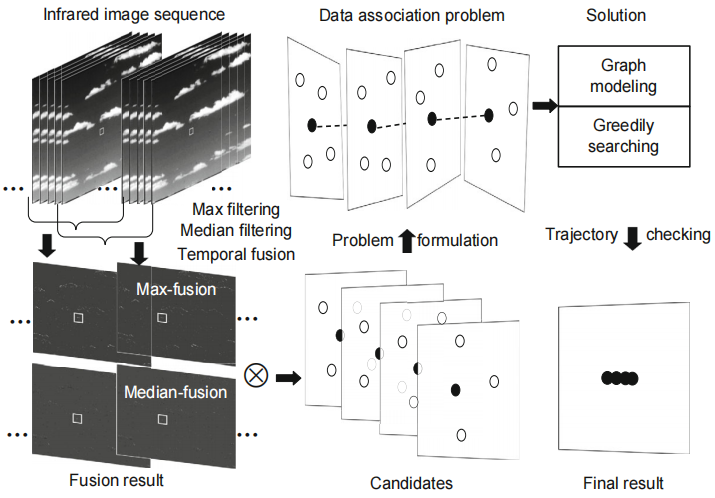

Jingli Gao (Associate Professor at PDSU)
Research (Selected Topics)
Intelligent security

Object detection is the entrance of computer vision, which is very critical in the fields of automatic driving, intelligent security, machine vision and so on. Object detection is used to determine whether a certain area of the image contains the object of interest, and then accurately find the object.
Relevant Work/Publications:
Low-altitude, slow-speed, small-target detection in the stationary background [CAC’17, JSJU’15]
-
Low-altitude, slow-speed, small-target detection in the slowly changing background [FITEE’16]
Low-altitude, slow-speed, small-target detection in the fast changing background [Sensors’17]
- Surface defect detection [CCDC’14]
Intelligent Medical Care
 Intelligent medical care is a recently emerging proprietary medical term.
Through the creation of a medical information platform, the interaction between patients and medical staff, medical institutions, and medical equipment can be realized, and the quality of medical care can be effectively improved.
Intelligent medical care is a recently emerging proprietary medical term.
Through the creation of a medical information platform, the interaction between patients and medical staff, medical institutions, and medical equipment can be realized, and the quality of medical care can be effectively improved.
Relevant Work/Publications:
-
Medical image understanding
- Oral digital medical technology
Robust/Adversarial learning
We are also interested in how to reduce the side effect of noise on the instance, which may be caused by the failure of sensors or even malicious attacks. We human have the ability to correctly recognise the objects even there are noise (e.g., we can easily recognise human faces under extreme illumination conditions, when partially occluded, or even with heavy makeup); while current machine learning algorithms may not. Recent studies also show that an imperceptible noise on the instance will lead machines to make wrong decisions. All those mean that we human and machines are using different feature extraction mechanisms for making decisions. What are the differences? And how to align them? Answering those questions is very important to build robust and trustworthy machine learning algorithms.
Relevant Work/Publications:
Towards defending against adversarial examples via attack-invariant features [ICML’20]
Efficient gradient approximation for black boxes [ICML’20]
Understanding adversarial attacks via maximum mean discrepancy [ICML’21]
Learning diverse-structured networks for adversarial robustness [ICML’20]
Robust non-negative matrix factorisation algorithms [TNNLS’17, AAAI’20]
Compare the robustness of different loss functions [ICIST’14, TPAMI’19]
Statistical (deep) learning theory
Deep learning algorithms have given exciting performances, e.g., painting pictures, beating Go champions, and autonomously driving cars, among others, showing that they have very good generalisation abilities (small differences between training and test errors). These empirical achievements have astounded yet confounded their human creators. Why do deep learning algorithms generalise so well on unseen data? It lacks mathematical elegance. We do not know the underlying principles that guarantee its success. Let alone to interpret or pertinently strengthen its generalisation ability. We are interested in analysing error bounds, e.g., generalisation error bound and excess risk bound, by measuring the complexity of the predefined (or algorithmic) hypothesis class. An algorithmic hypothesis class is a subset of the predefined hypothesis class that a learning algorithm will (or is likely to) output.
Relevant Work/Publications:
The relationship between algorithmic stability and algorithmic hypothesis complexity [ICML’17]
Control batch size and learning rate to generalize well [NeurIPS’19]
On the Rates of Convergence from Surrogate Risk Minimizers to the Bayes Optimal Classifier [TNNLS’accepted]
Understanding the generalisation of ResNet [TNNLS’20]
Understanding the generalisation of orthogonal deep neural networks [TPAMI’accepted]
Understanding the generalisation of multi-task learning [TPAMI’17]
Understanding how feature structure transfers in transfer learning [IJCAI’17]
Understanding the generalisation of non-negative matrix factorisation [NECO’16, TNNLS’16, TNNLS’17]